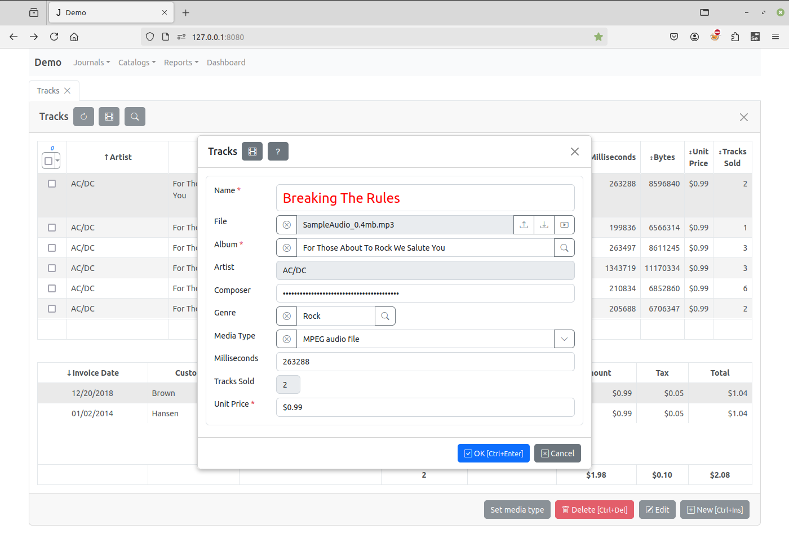

How to change style and attributes of form elements¶
You can access any DOM element on forms using jQuery.
In the following example, in the on_edit_form_created event handler defined
the item client module we find the OK button, hide it, and change the
text of the Cancel button to “Close” in the edit form:
function on_edit_form_created(item) {
item.edit_form.find("#ok-btn").hide();
item.edit_form.find("#cancel-btn").text('Close');
}
When an application creates input controls, it adds a class with a name that is the field_name attribute of the corresponding field to each input.
Thus, using the jQuery selectors, we can find the input of the customer field as follows (we select the input with the “customer” class in the edit form):
item.edit_form.find("input.customer")
Having found the element of the form you can use JQuery methods to change it.
As the field inputs are created by
create_inputs
after the
on_edit_form_created
event have been triggered (see the on_edit_form_created event handler in the
task client module) you must write
on_edit_form_shown
event handler to change inputs.
For example this code
function on_edit_form_shown(item) {
item.edit_form.find('input.name').css('color', 'red');
item.edit_form.find('input.name').css('font-size', '24px');
item.edit_form.find('input.tracks_sold').width(20);
item.edit_form.find('input.genre').parent().width('40%');
item.edit_form.find('input.composer').prop('type', 'password');
}
will change form inputs this way:
Please, note that if you need to change the width of input with prepend or append buttons (inputs of date, datetime and lookup fields) set the width of the input parent:
item.edit_form.find('input.album').parent().width('50%');
Another way to change the style of DOM elements is to use CSS. When the task node is selected in the Application Builder, the “project css” button is located on the right pane. Click on it to open the project.css file, which is located in the project folder. You can use it to input CSS that defines the style of the DOM elements of the project.
Each item form created in the project has css classes that enable developer to identify the form.
Each form has a class identifying it’s type: ‘view-form’, ‘edit-form’, ‘filter-form’ or ‘param-form’.
For example, the following code will remove the images in the buttons at the bottom of the form:
.view-form .form-footer .btn i {
display: none;
}
More edit form examples:
.edit-form #ok-btn {
font-weight: bold;
background-color: lightblue;
}
.edit-form.invoices input.total {
color: red;
}
Also each form has a class with a name that is the item_name attribute of the item.
The following code will remove images in the buttons only in the Invoices view form:
.view-form.invoices .form-footer .btn i {
display: none;
}
You can change the way tables are displayed. The tables that are created by the create_table method have a css class “dbtable” and a class with a name that is the item_name attribute of the item. Each column of the table also has a class with a name that is the field_name attribute of the corresponding field.
The example, the following code will display cells of the Invoices table Customer column bold:
.dbtable.invoices td.customer {
font-weight: bold;
}
One more way to change the way the field column is displayed is to write the on_field_get_html event handler.
For example:
function on_field_get_html(field) {
if (field.field_name === 'total') {
if (field.value > 10) {
return '<strong>' + field.display_text + '</strong>';
}
}
}